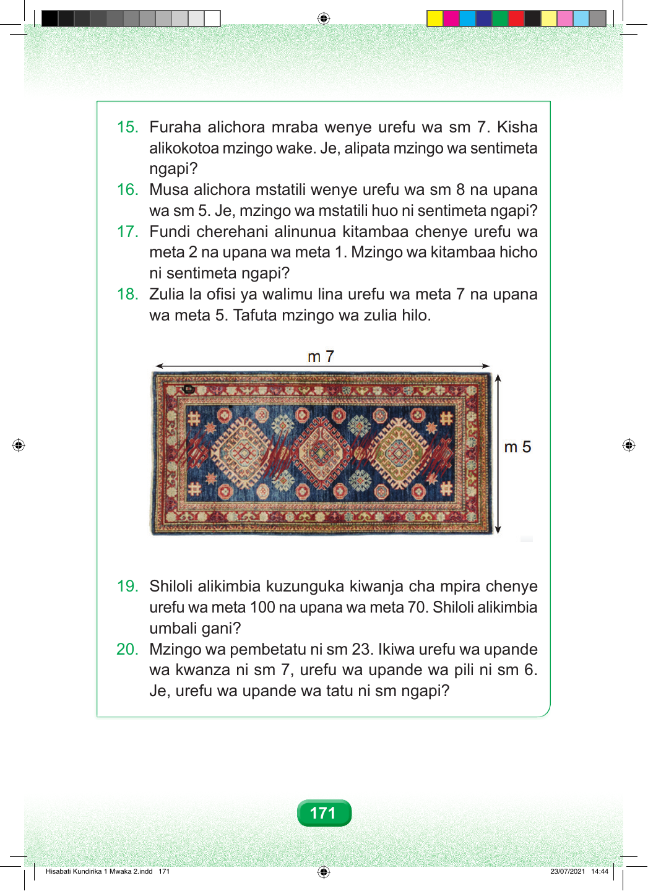

15. Furaha alichora mraba wenye urefu wa sm 7. Kisha alikokotoa mzingo wake. Je, alipata mzingo wa sentimeta ngapi? 16. Musa alichora mstatili wenye urefu wa sm 8 na upana wa sm 5. Je, mzingo wa mstatili huo ni sentimeta ngapi? 17. Fundi cherehani alinunua kitambaa chenye urefu wa meta 2 na upana wa meta 1. Mzingo wa kitambaa hicho ni sentimeta ngapi? 18. Zulia la ofisi ya walimu lina urefu wa meta 7 na upana wa meta 5. Tafuta mzingo wa zulia hilo. 19. Shiloli alikimbia kuzunguka kiwanja cha mpira chenye urefu wa meta 100 na upana wa meta 70. Shiloli alikimbia umbali gani? 20. Mzingo wa pembetatu ni sm 23. Ikiwa urefu wa upande wa kwanza ni sm 7, urefu wa upande wa pili ni sm 6. Je, urefu wa upande wa tatu ni sm ngapi? 171 Hisabati Kundirika 1 Mwaka 2.indd 171 23/07/2021 14:44